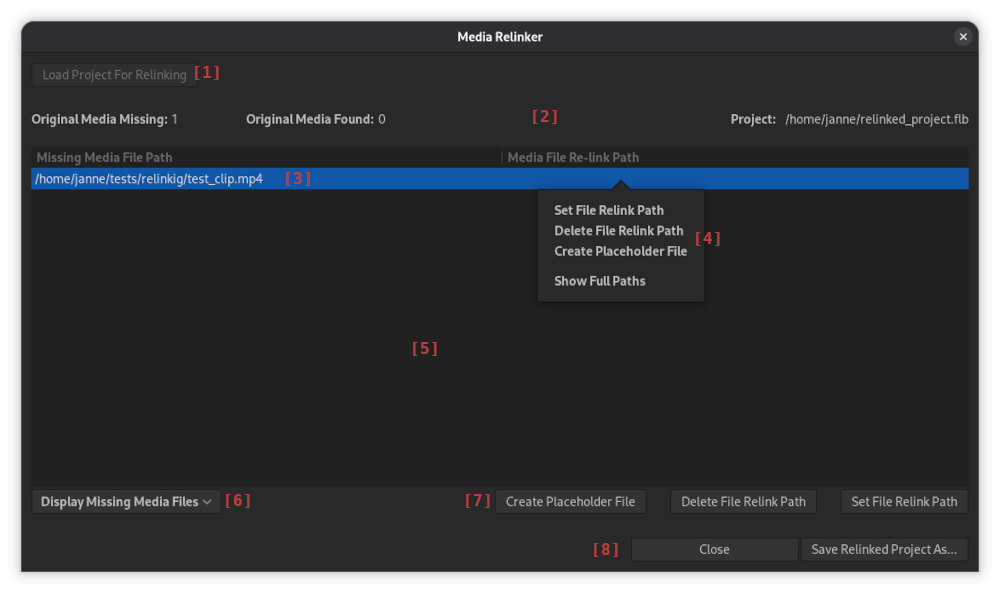

Relinking is the action of changing Media Item file path that points to a media file to point to another media file.
This is typically done to replace a missing file with another to enable loading Project that contains missing media.
Another use case is to replace media in Project for some techniical or artistic reason.
Flowblade has a dedicated Media Relinker Tool to perform this task.
Media Relinker Tool

[1] Load Project button Only Active whenb window launched from menu with no relink project set.
[2] Missing Media and Project info row.
[3] Media Item row Displays Media Item paths and the user set relink paths for them. Active row is displayed with blue background. [7] Action buttons actions are targeted at active Media Items.
[4] Media Item row context menu Actions that can be taken on target row Media Item.
[5] Media Items Table Displays missing media items and the user set relink paths for them. Can be set to display found Media Items with [6] Display Selector to relink found Media Items too.
[6] Display Selector Switches between displaying mssing and found media items.
[7] Action buttons Actions that can be taken on active Media Item.
[8] Close and Save buttons See below.
Main Relinking workflow
- Launch Media Relinker Tool either by:
- selecting Tool > Media Relinker from application menu
- pressing Ok in missing media info dialog with Open Project in Media Relinker tool checkbox active.
- If tool was lauched from applicaiotn menu press Load Project For Relinking button and select the project you wish to relink.
- Select the media file you wish to replace with some other media file. Press [7] Set File Relink Path button or use context menu [4] to start selecting the new file.
- Use drop down menu [6] to display either missing or found media files
- Press Save Relinked Project As... button to save the relinked version of the project
- Open the relinked project in Flowblade and continue working with it